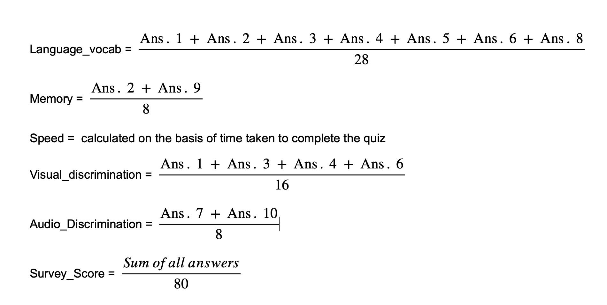
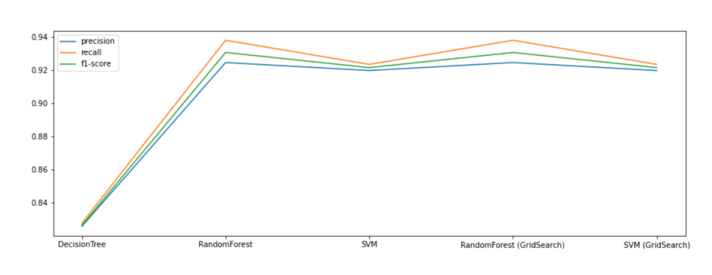
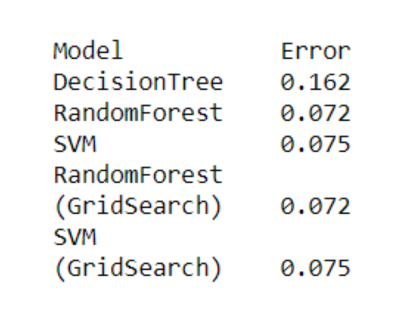
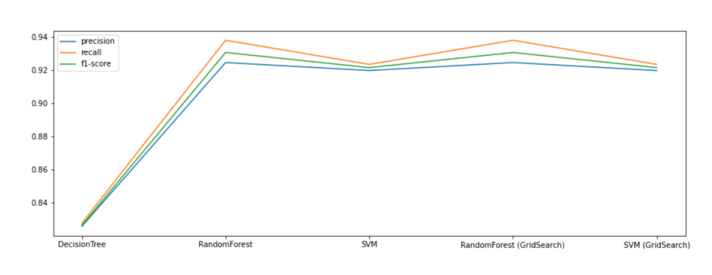
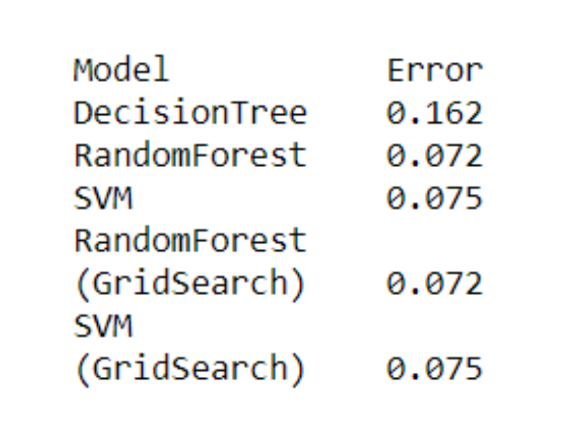

Calculation of scores

Working of the Model
The purpose of this project is to predict the 'Label' i.e., chances of the applicant having dyslexia. if the values of 'Language_vocab', 'Memory', 'Speed', 'Visual_discrimination', 'Audio_Discrimination' and 'Survey_Score' are provided. In the file 'DyslexiaML', we have created five different models to find the one which is the best fit for the given dataset. The comparison has been made between DecisionTree, RandomForest, SVM, RandomForest with GridSearch and SVM with GridSearch, on the basis of error, precision and recall. On comparing all of these parameters, we found that RandomForest with GridSearch is the best fit for our dataset.


On the basis of our findings, we then created the final model using RandomForestClassifier with GridSearchCV in order to make the most accurate predictions, in 'DyslexiaML_final' file. This model was then tested on a new dataset to find the labels, which were then compared with the actual label values. After this check we found out that our model was able to make predictions for dyslexia with a 5.8% error rate.

The purpose of this project is to predict the 'Label' i.e., chances of the applicant having dyslexia. if the values of 'Language_vocab', 'Memory', 'Speed', 'Visual_discrimination', 'Audio_Discrimination' and 'Survey_Score' are provided. In the file 'DyslexiaML', we have created five different models to find the one which is the best fit for the given dataset. The comparison has been made between DecisionTree, RandomForest, SVM, RandomForest with GridSearch and SVM with GridSearch, on the basis of error, precision and recall. On comparing all of these parameters, we found that RandomForest with GridSearch is the best fit for our dataset.


On the basis of our findings, we then created the final model using RandomForestClassifier with GridSearchCV in order to make the most accurate predictions, in 'DyslexiaML_final' file. This model was then tested on a new dataset to find the labels, which were then compared with the actual label values. After this check we found out that our model was able to make predictions for dyslexia with a 5.8% error rate.